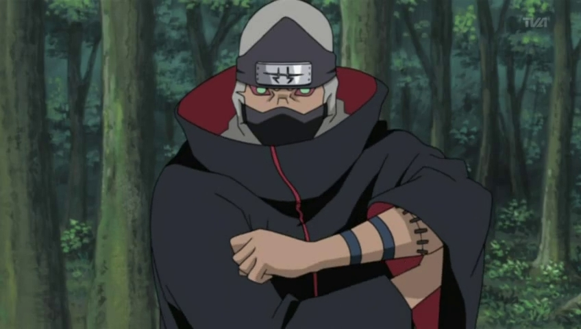

Inicio:
Kakuzu (角都, Kakuzu) fue un ninja renegado de Takigakure y miembro de Akatsuki. Su compañero fue Hidan. Llevaba el anillo "Norte" (北, Hoku) en el dedo medio izquierdo. A pesar de la mutua antipatía entre ambos, su trabajo en equipo fue casi perfecto, ya que se complementaban mutuamente. Kisame Hoshigaki se refería peyorativamente a Hidan y Kakuzu como el "Combo Zombie" (ゾンビコンビ, Zonbi Konbi), ya que prácticamente no podían morir.
Historia:
Kakuzu era originario de Takigakure (Aldea de la Cascada), donde fue enviado a asesinar al Primer Hokage en una misión fallida. Tras regresar, fue castigado por su aldea y encarcelado. En un acto de venganza, escapó y robó un secreto prohibido de su aldea: el Jiongu, una técnica que le permitía extraer y usar los corazones de otros ninjas para prolongar su vida. Desde entonces, se convirtió en un mercenario despiadado, obsesionado con el dinero y la inmortalidad.

Se unió a Akatsuki como un miembro clave, donde trabajó junto a Hidan, a pesar de su constante conflicto. Durante su tiempo en la organización, participó en la captura de varias bestias con cola. Finalmente, Kakuzu murió en batalla contra Naruto Uzumaki y Kakashi Hatake, después de que Naruto utilizara su Rasenshuriken para destruir sus corazones restantes.

Habilidades:
Todas las habilidades de Kakuzu giran en torno a su estructura de cuerpo, compuesto de cientos de hilos de color gris oscuro, llamados Jiongu, que mantienen su cuerpo unido con puntadas. Esto le permitía separar sus partes del cuerpo a voluntad para llevar a cabo ataques físicos a largo alcance, haciéndole muy difícil de derrotar. Los hilos también podían utilizarse para reparar el cuerpo de los demás, como cuando volvió a unir los brazos de Deidara.

Kakuzu podía extraer los corazones de sus enemigos e integrarlos en su propio cuerpo, lo que le permitía usar hasta cinco corazones al mismo tiempo. Cada corazón le otorgaba una vida adicional y la capacidad de manipular un elemento natural diferente (fuego, viento, rayo, agua y tierra). Esto significaba que tenía que ser derrotado cinco veces antes de morir definitivamente. Además, sus hilos podían formar una masa gigante en forma de pulpo alrededor de su cuerpo, aumentando su poder destructivo.